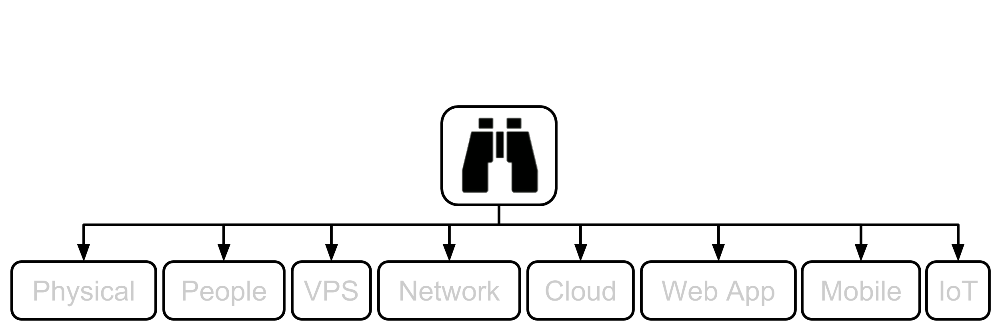
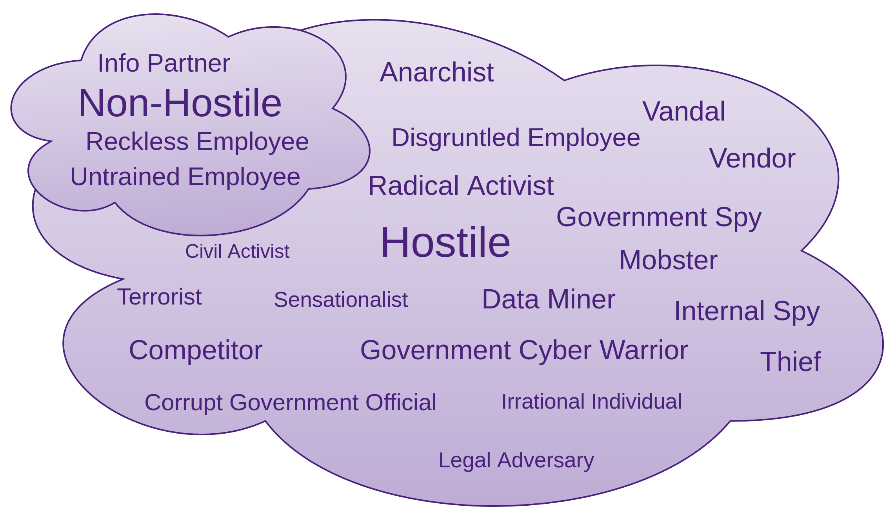
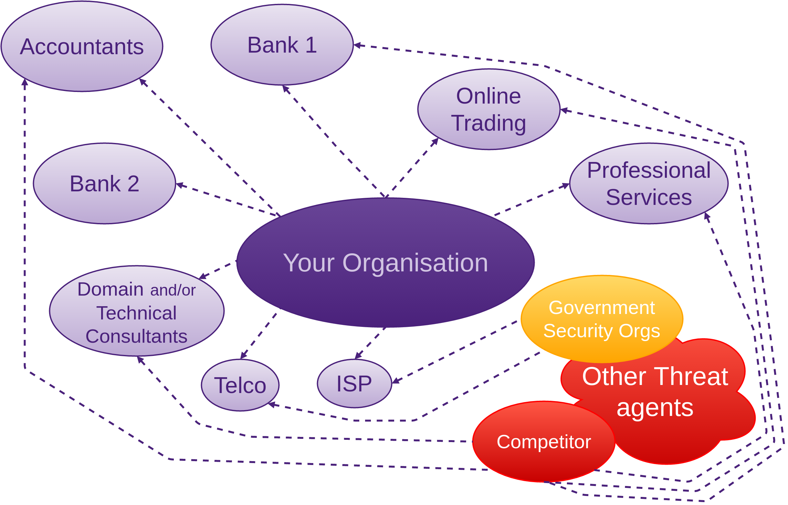

Starting with the 30,000’ View
First of all, why? Why start so high? Developers spend most of their lives focusing on code, and sometimes on architectural concepts and patterns. Software developers rarely focus on anything higher than this which has the affect of causing blind spots. The reason we start so high, and encourage the developer to come back to this level every so often, is to ensure that they are actually creating good, secure code and that their priorities are correctly aligned with the needs of their business. Ironically, as is often the case, a security focus may not necessarily align with the business’ wants.
Stepping back allows your peripheral vision to kick in.
This stepping back process (a form of modelling), should be performed by a collection of the following people:
- Deeply technical (software expert (developer/engineer)). I specifically do not mention tester(s) here, as testing should be the job of the developer. The developer is responsible for delivering high quality working code every Sprint
- Network expert(s)
- Domain expert(s)
- The person solely responsible for the project or product being delivered
- Person(s) with security specialisations in the areas involved in the finished product
You might be thinking that this team looks very familiar. It probably is, as it looks very much like a Scrum Team.
“Scrum Teams are self-organizing and cross-functional. Self-organizing teams choose how best to accomplish their work, rather than being directed by others outside the team. Cross-functional teams have all competencies needed to accomplish the work without depending on others not part of the team. The team model in Scrum is designed to optimize flexibility, creativity, and productivity.”
Performing this process as a team brings out the best in everyone. There are, of course, times when it is more effective to break out and work alone for a period of time.
1. SSM Asset Identification
The first question we must ask ourselves: What are assets in the context of threat modelling? Assets are something we or our clients place value on that we are responsible for, and subsequently will want to protect from unauthorised access.
Assets often emerge as you progress through the following steps, you will probably end up modifying this list as you go, but it is vital that you do not miss this step in your eagerness to increase security. If you do not have a good grasp on what it is that you are trying to protect, then there may be nothing, or at least little, to protect. You must have some idea of what your assets are before taking the next step. Feel free, even obligated, as you progress, to jump back and modify the list of assets. It is more than likely you will keep adding to it as you identify additional risks and work through the countermeasures of each chapter. This is commonly how the process unfolds.
Identifying your assets is a domain-specific task, so you are the best person(s) to do this. I will help to direct your thoughts as we progress though.
Many of the following chapters will address asset identification as the first step. Many assets will be the same for many chapters. Do not think about the assets as the be all and end all, but they are useful to keep in the forefront as you proceed through the following steps of this chapter.
Here are some assets to consider as part of your domain:
- User credentials: often stored within data stores, but also often found on the likes of post-it notes stuck to monitors or under a keyboard etc.
- Identity information such as: Email addresses, physical addresses, phone numbers, birth certificates
- Credit card numbers and similar
- Confidential business information, could come in many forms such as email, organisation wide wikis, document storage, and be stored in many places, such as: in data stores, code, configuration files, peoples heads, peoples desks and many others
- Confidential client information
- Reputation: I am sure you can think of a few ways that you or your organisations reputation could be tarnished or worse
Now, if you relate the potential loses with information security vectors, you will come up with a target list we can take into the next stages.
2. SSM Identify Risks
- MS 2. Create an Architecture Overview
- MS 3. Decompose the Application
- MS 4. Identify the Threats
- OWASP Threat Model Information
- OWASP External Dependencies
- OWASP Entry Points
This is where we abstract things a bit and think about some of the entities that could be risky to the target business.
Think about some of the relationships the target business takes a dependency on, and how they could be leaking intellectual property (IP).
OWASP Risk Rating Methodology is also useful here
- Likelihood “Threat Agent Factors”
- How likely are particular exploits to be carried out?
- How technically skilled is each group of threat agents?
- How motivated is this group of threat agents to find and exploit this vulnerability?
- What resources and opportunities are required for this group of threat agents to find and exploit this vulnerability?
- What sort of access can they acquire?
- How large is this group of threat agents?
- Likelihood “Vulnerability Factors”
- How easy is it for this group of threat agents to discover this vulnerability?
- How easy is it for this group of threat agents to actually exploit this vulnerability?
- How well known is this vulnerability to this group of threat agents?
- How likely is an exploit to be detected?
- Impact “Technical Factors”
- What’s the impact likely to be if a particular exploit is executed?
- How much data could be disclosed and how sensitive is it?
- How much data could be corrupted and how damaged is it?
- Which services could be lost, how vital are they and how long could they be down for?
- Would you be able to trace the threat agents actions to an individual?
- Impact “Business Factors”
- What would the financial damage be to any given exploit?
- Would the exploit result in reputation damage that could harm your business?
- How much exposure does non-compliance introduce?
- How much personally identifiable information could be disclosed?
and the Intel Threat Agent Library
Rating of Threats
How do we rate the threats we have just discovered? With a simple formula Based on the MicroSoft 6. Rate the Threats
Record the risks you have identified and rank as per above formula.
Keep your eye on the vulnerability advisories, as that is part of what an attacker or penetration tester will use to formulate their exploits for you:
-
Exploit Database from Offensive Security
- Web Front-end
- CLI (searchsploit) in Kali Linux
- SecurityFocus BugTraq
- Rapid7 (current owner of Metasploit) also has a database
- NodeSecurity
- National Vulnerability Database
3. SSM Countermeasures

Here is where you work through collaboratively creating countermeasure Product Backlog Items (PBIs). Countermeasure PBIs are like any other PBI. PBI qualities:
- Estimable
- Independent
- Testable
- Should promote collaboration
- Must fit within a Sprint by the time they are properly groomed
Your countermeasure PBIs also need to reference the risk they were created in response to, thus providing context and urgency information. The PBIs need to be integrated into the Product Backlog, ordered based on the risk ratings. This way what you decide to fix first will be determined by the highest scoring risks.
- OWASP Countermeasure Identification
- MS STRIDE provides countermeasures to identified threats
- MS Threats and Countermeasures
4. SSM Risks that Solution Causes
This is really dependent on the solution(s) you discover. Often there will be new risks that the mitigation techniques introduce. We will work through many possibilities in the following chapters.
- Make sure before you test that you have written permission for all the areas that you are about to test, documenting what could possibly go wrong
- Make sure you have backups and that they work
- Complacency?
- Spending too much on technological solutions and ignoring the fact that the person on the front desk can easily be tricked to reveal information an attacker needs or lower the defences of a computer system. See the section on People
As we work through later chapters we will discuss many more hypothetical risks that proposed countermeasures may cause.
5. SSM Costs and Trade-offs
I am not here to do the work for you, but rather to help you do it.
“Give a man a fish and feed him for a day. Teach a man to fish and feed him for life” - Anne Isabella Ritchie.
This, again, is really dependent on the solution(s) you discover.
Think in terms of Counter-Measure costs - vs - Breach Costs, and weigh them against each other.